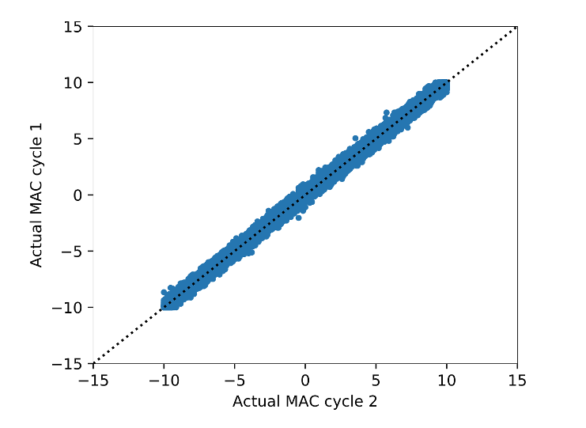
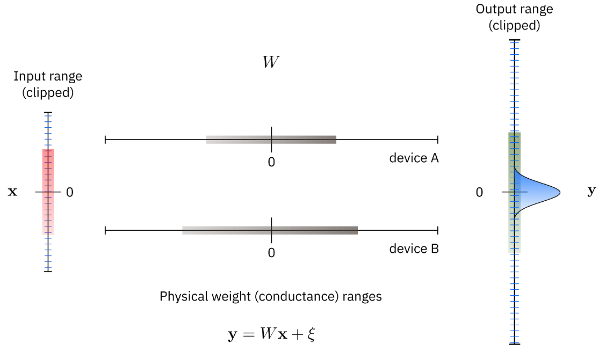
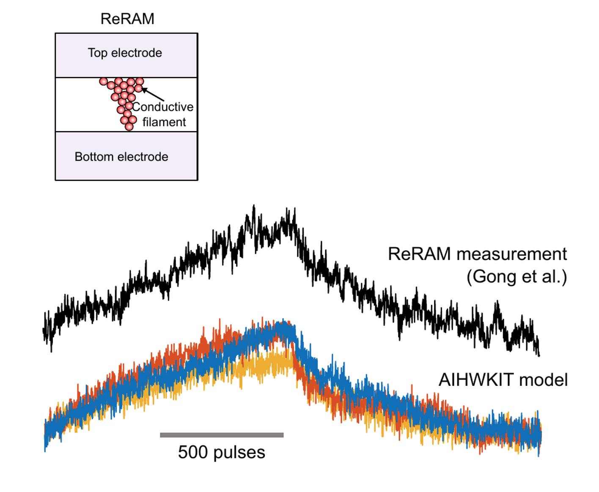

<?xml version = "1.0" encoding = "UTF-8"?>
<xsl:stylesheet version = "1.0" xmlns:xsl = "http://www.w3.org/1999/XSL/Transform">
<xsl:template match = "/"> 
<!doctype html>
<html lang="en">

	<head>
		<meta charset="utf-8">
    
		<title>Lecture 1 - NNML 2020</title>
		<meta name="description" content="NNML">
		<meta name="author" content="Emre Neftci">

		<meta name="apple-mobile-web-app-capable" content="yes">
		<meta name="apple-mobile-web-app-status-bar-style" content="black-translucent">

		<link rel="stylesheet" href="dist/reset.css">
		<link rel="stylesheet" href="dist/reveal.css">
		<link rel="stylesheet" href="nmilab.css">

		<!-- Theme used for syntax highlighted code -->
		<link rel="stylesheet" href="plugin/highlight/monokai.css">

    <script src="jquery.js"></script> 
    <script> 
    $(function(){
      $("#sdlides").load("slides_1_inner.html"); 
    });
    </script> 

  </head>    

	<body>
		<div class="reveal">
			<div class="slides">
<section>
        <section data-markdown data-vertical-align-top data-background-color=#B2BA67><textarea data-template>
            <h1> Lecture 12: Memristor Models in PyTorch<br/> </h1>
            <ul>
              <li/> Slides derived from <a href='https://aihwkit.readthedocs.io/'>AIHWKIT Documentation</a>
        </textarea></section>

      <section data-markdown><textarea data-template>
      <h2> Memristor Introduction</h2>                                                     
      
      <ul>
        <li class="fragment"/> 
      </ul>
      </textarea></section>

      <section data-markdown><textarea data-template>
      <h2> In-Memory Computing</h2>                                                     
      
      <ul>
        <li class="fragment"/> Multiple crossbar arrays that communicate with each other
        <li class="fragment"/> Efficient vector-matrix multiplication
          <li class="fragment"/> <b>Offchip Training:</b> weights are typically trained using a conventional GPU-based hardware and transferred
        <li class="fragment"/>   <b>Onchip Training: </b>weights are typically trained using a conventional GPU-based hardware and transferred
      </ul>
      </textarea></section>

      <section data-markdown><textarea data-template>
      <h2> Memristor Typees and Non-Idealities</h2>                                                     
      
      <ul>
        <li class="fragment"/> 
      </ul>
      </textarea></section>

      <section data-markdown><textarea data-template>
      <h2> RRAM Non-Idealities</h2>                                                     
      
      <p class=ref>(Spiga and Menzel, 2021)</p>
      <ul>
        <li class="fragment"/> 
      </ul>
      </textarea></section>

      <section data-markdown><textarea data-template>
      <h2> Memristor Non-Idealities</h2>                                                     
      <div class=row>
      <div class=column>
      <p>Aymmetric non-linearity</p>
      
      </div>
      <div class=column>

      <p>Effects of aymmetric non-linearity</p>
      
      </div>
      </div>
      <p class=ref>[Agarwal_etal16_resimemo]</p>
      <div class=row>
      <div class=column>
        <p>Cycle to cycle non-linearity</p>
      
      </div>
      <div class=column>
        <p>Device to Device non-linearity</p>
      
      </div>
      </div>
      <ul>
        <li class="fragment"/> It is necessary to take these non-idealities into account during training
      </ul>
      </textarea></section>

      <section data-markdown><textarea data-template>
      <h2> Specialized Update Algorithms</h2>                                                     
      
      <ul>
        <li class="fragment"/>       </ul>
      </textarea></section>

      <section data-markdown><textarea data-template>
      <h2> Specialized Update Algorithms</h2>                                                     
      
      <p class="ref">(Rasch et al. 2021)</p>
      <ul>
        <li class="fragment"/>       </ul>
      </textarea></section>

      <section data-markdown><textarea data-template>
      <h2> AI Kardware Kit</h2>                                                     
      
      <p class="ref">(Rasch et al. 2021)</p>
      <ul>
        <li class="fragment"/>
      </ul>
      </textarea></section>


 
</section>
      </div></div>

		<script src="dist/reveal.js"></script>
		<script src="plugin/zoom/zoom.js"></script>
		<script src="plugin/notes/notes.js"></script>
		<script src="plugin/math/math.js"></script>
		<script src="plugin/search/search.js"></script>
		<script src="plugin/markdown/markdown.js"></script>
		<script src="plugin/highlight/highlight.js"></script>
		<script>
			// More info about initialization & config:
			// - https://revealjs.com/initialization/
			// - https://revealjs.com/config/
			Reveal.initialize({
				hash: true,
        width: 1280,
        height: 720,
        margin: 0.0,
        navigationMode: 'grid',
        transition: 'fade',
				controls: true,
				progress: true,
				center: true,
				hash: true,
				plugins: [RevealMarkdown, RevealHighlight, RevealNotes, RevealMath.MathJax2],
        math: {
              mathjax: 'https://cdnjs.cloudflare.com/ajax/libs/mathjax/2.7.0/MathJax.js',
              config: 'TeX-AMS_HTML-full', 
              TeX: { Macros: { Dp: ["\\frac{\\partial #1}{\\partial #2}",2] }}
            },
			});
		</script>
	</body>
</html>
